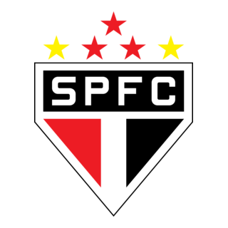

Esse é o site do maior do brasil, tri mundial e campeão de tudo
São Paulo Futebol Clube, o clubes mais tradicional e vitorioso do futebol brasileiro. 🏆 Principais Conquistas: Mundial de Clubes FIFA: 3 vezes (1992, 1993 e 2005) Copa Libertadores da América: 3 vezes (1992, 1993 e 2005) Campeonato Brasileiro: 6 vezes (1977, 1986, 1991, 2006, 2007 e 2008) Copa do Brasil: 1 vez (2023) Campeonato Paulista: mais de 20 títulos Recopa Sul-Americana, Supercopa Libertadores, Copa Sul-Americana, entre outros títulos internacionais